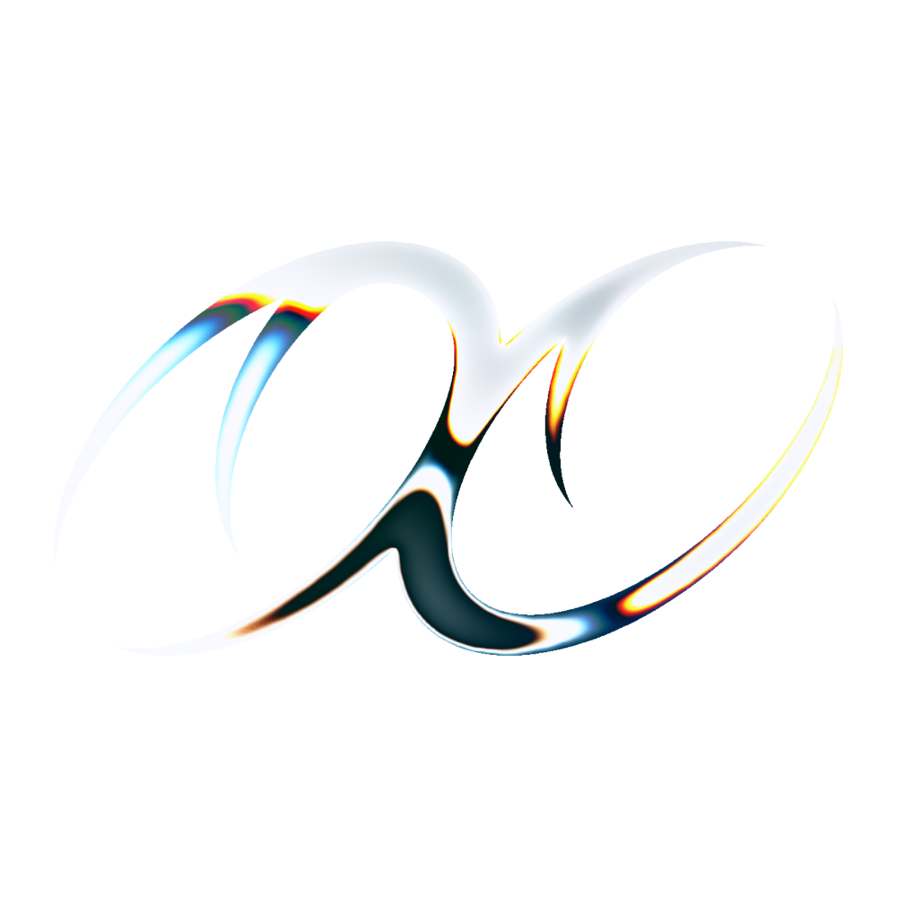
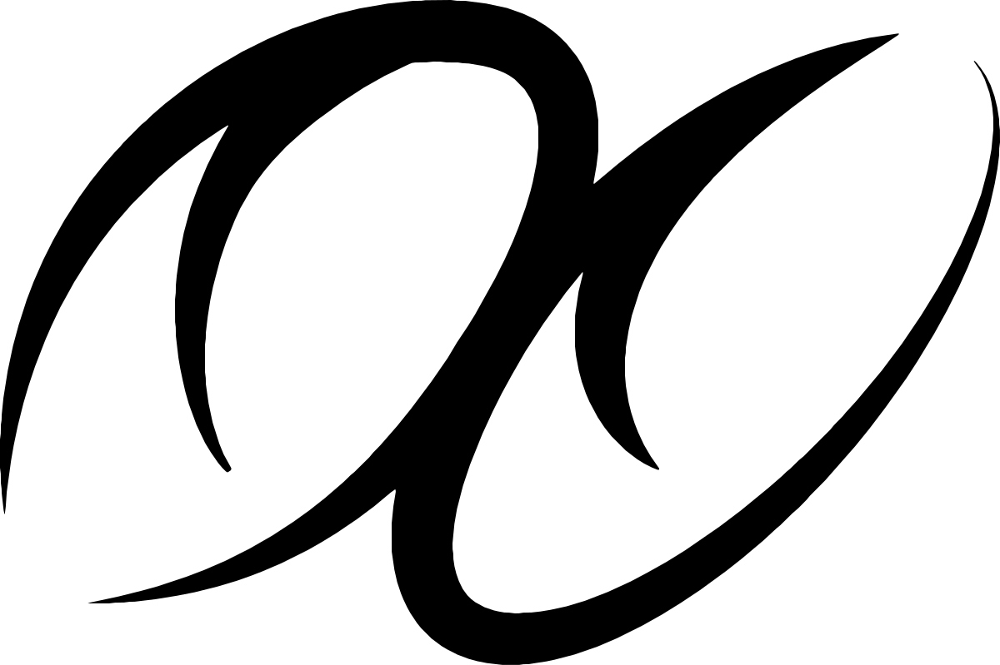
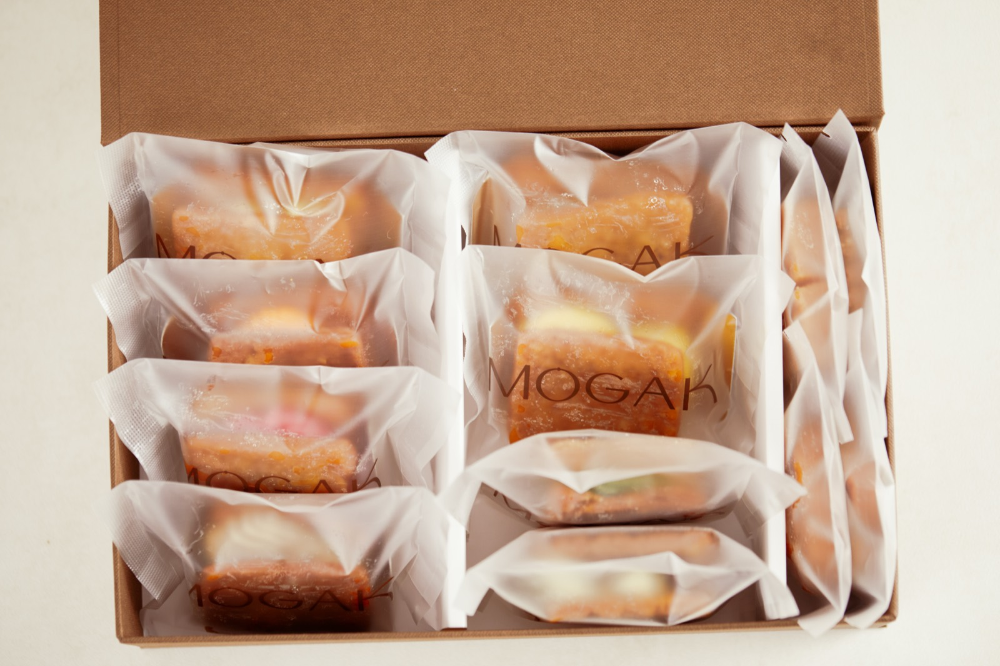
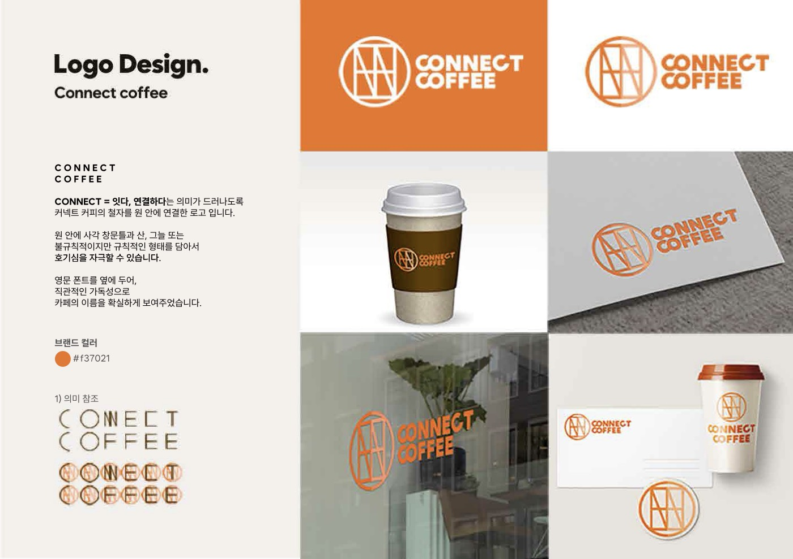
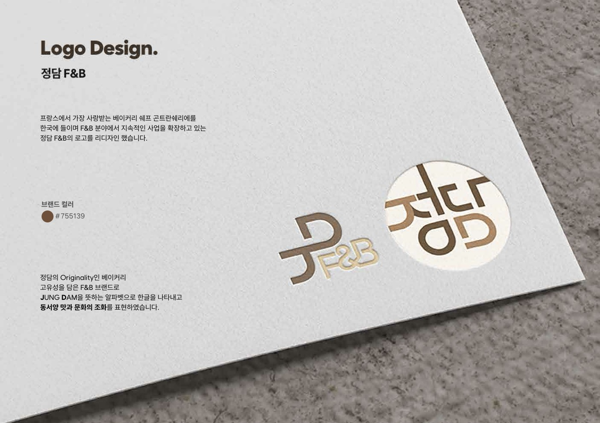
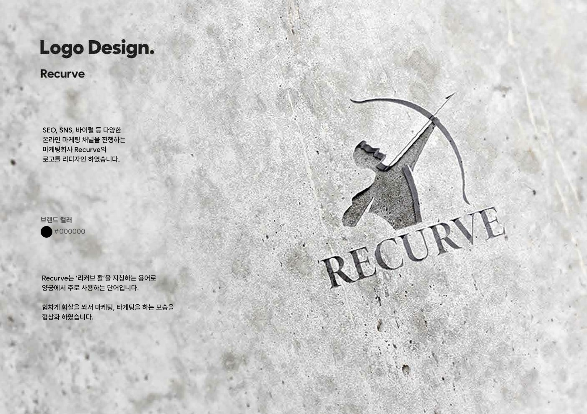

CHART 03 — SELF BRANDING
KHUN studio So, Revive
Brand Revival Studio — RVB, Re:vibe the Brand
멈춘 브랜드를 다시 뛰게 하는 디자인 스튜디오. 나 자신을 첫 번째 환자로 삼아, ‘소생’이라는 이름에서 로고와 심볼, 이 사이트의 모든 장면까지 하나의 체계로 만들었습니다.

Origin
소생 [revive]소통하고 생각하는,
그래서 소생
‘소생’은 되살아나다, 활기를 되찾다라는 뜻이자, 소통하고 생각하는 디자이너라는 저의 다른 이름입니다. 멈춘 브랜드를 진단하고, 새로운 진동을 주어, 다시 보이고 기억되게 만드는 일. 그 과정을 그대로 로고에 담았습니다.
멈춘 0의 상태에서 눈을 뜨고, 두 시선이 마주 보며 얽혀 하나의 표식이 됩니다. 서로를 바라보는 두 눈, 그리고 끝없이 이어지는 진동.

- 01FLATLINE
- 03EYES OPEN
- 05RE:VIBE
- 06REVIVED
Brand Symbol
THE REVIVE MARK-
01 — FLATLINE · CORE
Core
멈춤이자 0의 상태. 단단한 겉 안에 살아 움직이는 파동과 모든 가능성을 품은 구체.
-
03 — EYES OPEN
Eyes Open
하나로 굴러다니던 눈동자가 두 개로 나뉩니다. 소통하고 생각하는 두 시선.
-
05 — RE:VIBE
Re:vibe
로고의 윤곽이 여러 겹으로 인피니트 심볼처럼 요동칩니다. 멈춘 브랜드에 보내는 새로운 진동.
Works
REVIVED BY KHUN studio-

S-01
모각 MOGAK OPEN CHART →
정성을 깨닫는 한 조각. 한국 프리미엄 개성약과 브랜드의 아이덴티티와 패키지, 안내문.
-

S-02
Connect Coffee
‘잇다, 연결하다’를 담은 커피 브랜드 로고 디자인.
-

S-03
정담 F&B
동서양 맛과 문화의 조화를 표현한 F&B 브랜드 로고 리디자인.
-

S-04
Recurve
리커브 활에서 출발한 온라인 마케팅 회사 로고 리디자인.